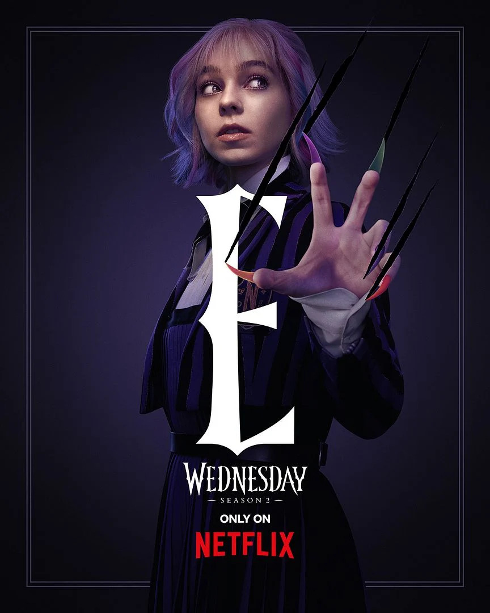

Mercredi Addams est la fille unique de la famille Addams, connue pour son caractère sombre et son humour macabre. Elle est souvent représentée comme une adolescente intelligente, cynique et très indépendante. Avec ses longues tresses noires, sa peau pâle et ses vêtements sombres, elle incarne un style gothique reconnaissable. Mercredi se distingue par son esprit mordant et sa manière glaciale de répondre aux autres. Elle aime les expériences étranges et les activités qui sortent de l’ordinaire, souvent liées à la mort ou au morbide. Malgré son apparence froide, elle est profondément attachée à sa famille, même si elle le montre à sa manière. Elle n’a pas peur de défier l’autorité et fait preuve d’une grande détermination. Son intelligence et sa curiosité la poussent à aller toujours plus loin dans ses recherches et réflexions. Mercredi se démarque aussi par sa créativité, notamment dans ses inventions ou ses idées surprenantes. C’est un personnage unique qui mélange ironie, noirceur et une forme très personnelle de sensibilité.
Enid Sinclair est une louve-garou vive, joyeuse et colorée, totalement opposée à Mercredi Addams. Elle se distingue par ses cheveux multicolores et son style vestimentaire très pétillant. Toujours souriante, elle incarne l’optimisme et la bonne humeur dans toutes les situations. Malgré son côté extraverti, elle cache une certaine insécurité, notamment liée à sa difficulté à se transformer en loup. Elle est très sociable, adore discuter et se faire des amis, contrairement à Mercredi plus solitaire. Enid est loyale et attentionnée, toujours prête à soutenir ceux qu’elle aime. Elle apporte une touche de légèreté et de chaleur à l’univers sombre de Mercredi. Sa patience et son ouverture d’esprit lui permettent d’accepter les différences des autres sans jugement. Enid adore les activités modernes comme les réseaux sociaux et suit les tendances. Elle représente l’équilibre entre la douceur, l’énergie et le courage, ce qui fait d’elle un personnage attachant.
